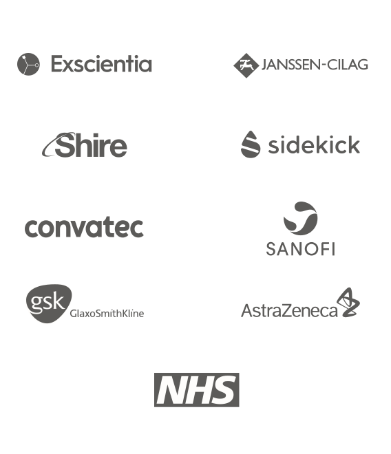
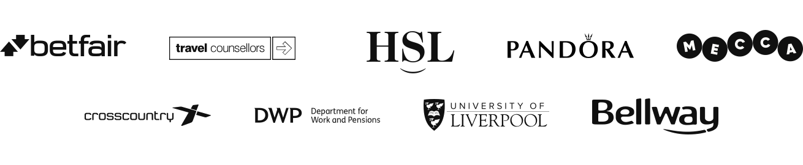
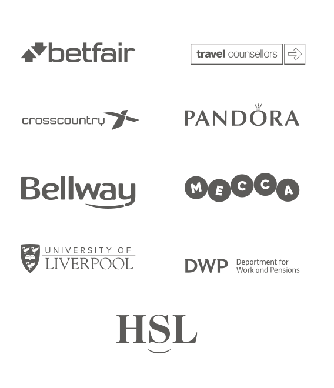

// More Contacts
// More Sales
// Better User Experience?
I help digital teams build high-performing products and services.

Leading the product design of a product ordering application for critical medical supplies.


Created a set of scientific tools to assist computational drug design teams.

Increasing conversion of onboarding and hompepage features

I’m usually engaged as a Product or UX Expert, but retained when clients see the depth and width of my skills set:
When projects fail, it’s often because not enough time has been spent understanding the problem (discovery)
Successful discovery finishes with a shared understanding of user needs and business goals.
A successful discovery is only half the story.
Knowing how to take discovery insights, and build something which moves the needle for the business is essential.
(Although you won’t see it mentioned explicitly below, I also have deep experience in CX, Service Design, Digital Strategy, Branding SEO and Digital Marketing.)




Jim did an amazing job of bringing to life the feedback and key considerations from the research. Jim provided a great work space to be creative and have clear communication.
I would recommend Jim to others who are looking for support with similar projects he provides great support and value.

Jim freelanced with us for an extended contract, joining a newly-formed Product design team.
Despite the extremely challenging brief, and whilst grappling with a highly complex domain and fluctuating programme direction, he’s absolutely thrived.

Great to work with and really good/deep thinking around some of the problems we encountered.
User journeys and wire frames were good quality and made the design and development process much easier – recommended.